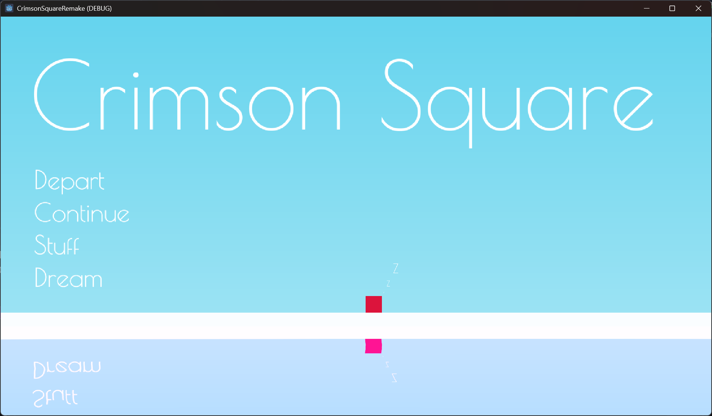

- A quentized figment of human consiousness randered into a game
now as I am writing it here this tagline feels so flashy lol
after banging my head to pc for 3 years to learn basic Game Devlopment I remembered why was I learing it in the first place.
Games are after all final form of art they combine Art, Writing, Music All sorts of practices that fall under art you can put that into a game.
well around same time I stumbled upon a game I used to play Knytt Stories its a free game created by Swidish Game Devloper
Nicklas Nygren (Nicklas)
you can get/see it here
Knytt wiki

and man its a beautiful game with VAAAAAAAST world as its name suggests
Knytt (which roughly translates as “tiny creature” in Swedish) the world feels so huge and explorable in this game that I spent hours, I can go in any direction and most fascinating part was world was alive without me as a player, the in game creatures lived there and that felt quite amusing to watch creatures looking like humans live underground catching fishes in lava and 2 brothers fighting somewhere on shores of some river created from a waterfall thats located under the ocean man as vauge as this sounds I found it really cool it had a unique level design and artstyle to it that I haven’t played something like that in all these years playing countless games.
I wanted to create something like that, I wanted to tell something Knytt way but well ofcourse being new to game devlopment reproducing that level of quality and polishing was wayy ahead of me. and thus born something broken and Originally named Bobba Square lol but renamed to Crimson Square.
Crimson Square
is Velocity Platformer game idk if thats actual genre name but thats what I am gonna call this,
The broken part was a game mechenic called wall climbing but I simply embraced the bug and bumped the bug’s intensity, that how I like to address the mechenic vertical power wall slide basically climbing on wall makes you vertically faster and faster until theres no wall left
(no clamping added) so ye a long vertical platform could break the game techinacally but I am gonna keep it that way hah.
I began devlopment in maybe around 2023 October
Completed A Polished prototype in 22 December 2023
you can check it out here
It wasnt new to me delevering Idea in some physical understandable form and as a beginner it was a good project but nothing was optimized, and it wasn’t so great game it just worked like a game, I shared it among friends put a story on my instagram and response was welcoming and nice and there were mostly no bugs difficulty was also nicely curved but maybe few might have gotten furstrated and stopped playing but well (git gud)
the importent part for me was story and I wanted this one to be like a prototype so added few dilogues that would hint something that is gonna happen in actual game and well lets say life haha.
shit was done and I was in all glory mode since I also made an android build just for a great friend of mine hoe
, it wasn’t last I touched game but I was finally done and exhuasted. so I slowly drifted back to other works, projects and game prototypes.
Time went by and that android build was later sent to my brother and surprisingly he liked the game too not as an brother brother new devloper shit but as an actual game and he kept playing same two levels I made and as I saw him I was quite intrigued why tf he would play some silly game project, I had poured my soul in it but it was simple game after all, him playing that made me feel quite absured about myself that what was I doing for all this time I had touched the game projet in between trying out new stuff but not so regularly, besides the way it was coded I kinda felt bad. I tried to fix the original code but the way I had organised my files were shit too art was not that good either since in all these qualities I was now better at it.
so I created a new project Crimson Square Remake
(still has badly oragnised files around) I made few upgradations to the old project
about the
Technical Changes
- I wanted to implement Finite State mechine the way it should be states distributed across multiple scripts and scripts only used when they are needed this approch was better then single script enumartaed states. which was also not implemented in old prototype lmao I Evolved quite a lot.
- a better Dilogue System That I have built, previously on prototype I used a plugin for dilogues called Dialogic and well this time I wanted every single bit of the game (I mean most of) created solemnly by Vedarth Joshi, and I loved working with jsons so boom
- I was also introduced to Shader programming and I will leave it there.
Game Design Changes
- well in simple words old prototype wasn’t in its best form when it came to art so this time I will do same shitty art I can but in my own compiled Asprite
(cause that way it becoms free) and the idea that if I spend more time on art it will eventually
look good
- The major change was I converted game to semi-metroidvania now my cute Crimson Square had ugly unforgiving world that he might have to fuck around in to find out why the fuck is he here lmao.
- my protoype’s story lacked (hinted but lacked) a GOOD ANTAGONIST and well that was about time I came up with a reasonably okay enemy ofcourse player would like something more then obstacle evading course
- I read about how to make good indie games from various sources and it alll echoed one thing that focus on things that you are good at and make it core of you game so well I made various ways to present my content textually. I get it people don’t like to read inbetween and alot of people skipped so little text I had in prototype so this time I decided I will load this thing full of text hah cause few of the players liked reading short stuff and I will make sure all of the players deal with it, I have Dilogues, I have Postcards, I have Journal, I cooked OATS (Out of air text system) so that I can show text whenever I want in game lastly I even have player quick thoughts that showup on top of player so good luck with that one skippers.
- A GOOD MAIN MENU
- and well I was introduced to Shader Programming
I would have also wrote about the Story contents but I guess I will hold onto that one till the game realease. and well theres already so much text so figure the lore out yourself.
This summerizes the updates that I am currently aware of, this game is something I could keep talking about and maybe thats why I am building it, shit does break all the time but lately I started Keep debugging it abruptly until shit looks playable and eyepleaseing and so far the only damages were I got a bit more insane then I was hah.
All the devlopment, code I am keeping private for now since I haven’t wrote every single epic comment in my code that expresses the divine deepness and frustration I hold, so idk maybe I will opensource it if someones actually intreasted thanks for reading, because thats what I have expirianced alot in my life and I will never get tired of it.
ps: the main menu might look like this?
